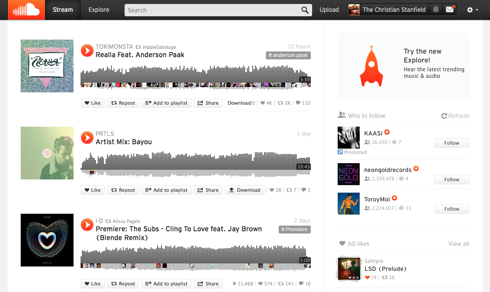
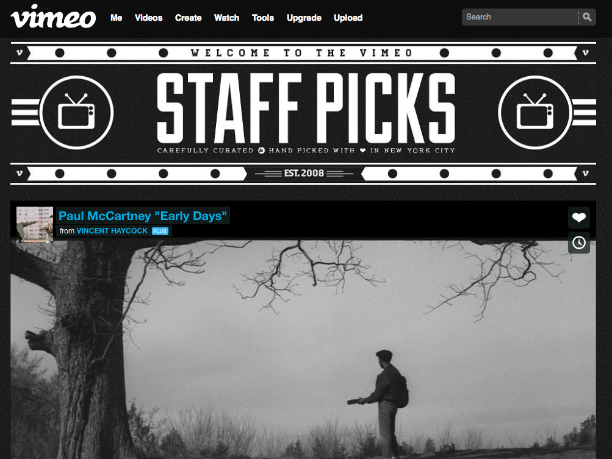

I like Soundcloud because it opens the door for smaller independent musicians to get their work out there and get noticed. Other music streaming sites like Spotify and Pandora feature mostly well-established recording artists, but Soundcloud is a place where you can listen to work from up-and-coming artists who haven't made it big yet.
The part of the site that definitely draws the eye is the main feed, which makes sense. Soundcloud is structured in a way that your stream is all the posts from the artists you follow in order of their release. Like the newsfeed on Facebook.
Visually it's not anything too out of the ordinary. It's utilitarian, minimalist, clean, open and organized.
What Soundcloud does is creates a community for independent musicians and djs and a place where anyone can hear and comment on their work.
The content is quite varied, in many ways the opposite of the clean design. Anyone can post to the site, so it's a mix of amazing, fresh, ridiculous and strange.
Navigating the site isn't the most intuitive. You have access to your stream which is posts and re-posts from who you follow, but also separately your likes which have their own feed, and your friends/the artists you follow who are only accessible after clicking on your name in the menubar. The menubar is always present but most of the options are buried in a dropdown menu. The content itself is all contained in scrolling feeds which are pretty straightforward. And there is a searchbar if you know what you're looking for.
Probably the biggest problem with Soundcloud is it can feel like wading through vast varieties of music with no organization much of the time. Your stream isn't customizable and the only way to navitage it is to scroll through everthing in real time which means looking through every post of every person you follow. When you find something you like you can "like" it but that doesn't add it to either your stream or your friends' streams. Re-posting will add it to their streams and yours, but as soon as more posts come in it'll get buried deep in the feed and lost pretty quickly. And there's no way to rate songs or hear more music similar to what you've rated like Pandora.
The nice part about Soundcloud is that it is free for listeners and there are no ads. They do charge if you want to post your own original material beyond the first few, so ironically it's the artists that have to pay, but ideally if your work's good enough Soundcloud can get you the exposure and recognition you're looking for. A few of my friends are djs who post their sets on Soundcloud, but personally I've never paid to post anything myself.

I was a big fan of Springpad before it closed down. It was very similar to Evernote in concept but so much better in execution for a visual person.
The content, and especially images is definitely what drew your eye when you were there. Like Evernote you have notebooks and notes which can be anything, but instead of being plain brown your notebooks are made up of the images from your posts. For a visual person this makes them so much easier to quickly identify and browse through, and gives you a window into their contents before you even open them.
Aside from a simple menubar at the top, visually all you saw was either your notebooks or notes, primarily represented by images with a title and optional brief description. It was clean, striking, simple, well-considered and well-organized.
Besides allowing you to save anything as a note and organize your digital life, what also set Springpad apart from Evernote was the social aspect. Besides sharing notebooks with friends which you can do in Evernote, Sprindpad let you make any of your notebooks public to share with anyone on the site. You could browse through other people's collections and follow any that you liked.
The content was 100% user generated so of course it varied quite a bit, but unlike Soundcloud it was very well organized and easy to browse through. The notebooks were usually themed and focused and themselves were organized into categories that made it easy and convenient to browse.
Navigating the site was very straightforward. The menubar at the top was simple and everything was one click away. Besides that there was only your content and how you organized it was very customizable. Clicking on any note opened it on top of everything else until you clicked away.
Because of the clean out-of-your-way design and easy organization of content, and especially with the social aspect, it was easy to lose a few hours on the site browsing through old things and discovering new ones.
As far as I was aware Springpad was not monetized in any way, which is perhaps why it closed down. There was never anything to buy or any ads, and they may have struggled finding a way to make money with the site. It would be great to see them return someday or another site like them to come along.

Vimeo has done a great job of defining itself as a community for independent filmmakers. While it's similar to Youtube in that anyone can create an account and upload any kind of video, Vimeo has managed to leave Youtube as the place for cat videos and video selfies and attract content from actual filmmakers.
I'm not sure Vimeo really has a "homepage". When you login you're taken to a feed of videos from people you follow, and content is organized in many different ways with a menubar that expands into more menubars of options. When you're watching an actual video it definitely is a cleaner environment then Youtube. The screen isn't cluttered with other related videos, you can reach them easily by scrolling up or clicking on a bookmark tag, but the video you're watching is definitely the focus of your attention.
Visually the site definitely focuses on the content. There are always links giving you more ways to explore everywhere you look, but it doesn't get in the way nearly as bad as Youtube. Once you upload a video you can choose the thumbnail picture to represent it, and wherever you go on the site that's mostly what you see. Visually it's a mix of clean and busy, focused and maze-like, out-of-your-way and in-your-face at the same time.
What I really appreciate about Vimeo is what it offers smaller independent filmmakers. In many ways it's very similar to Soundcloud except for video instead of music. It doesn't get the "eyes" of Youtube, not as many people know about it or watch it, but it's a place you can share your work and watch others' without being surrounded by the circus that is Youtube.
The content like all these sites is user-generated, so the variety is definitely there, but at the same time it's very focused. It's a place only for the works of filmmakers and artists. It's all genres, funny, sad, scary, amazing and strange.
I've never spent a lot of time exploring Vimeo. Usually I end up there from seeing videos on other sites. But it's a community most if not all of my filmmaker friends share and have content on, and there's always more to see. You could easily lose a few hours exploring and watching videos there.
Similar to Soundcloud, Vimeo's content is free to watch and there's never any ads, and it's the content creators who monetize the site. It is free also like Soundcloud to upload material to a limited extent, but upgrading to a paid account gives you access to all their features. I used to pay for a pro account although I let it expire and haven't re-upgraded in some time.